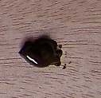

* C.V. et publications
* Présentation sur le site Paris-Sorbonne
* Quatre discours de Marie-Madeleine Martinet
* discours de Pierre Brunel
Chapitre précédent : Art
Retour au menu principal
 Chapitre précédent : Art
Chapitre précédent : Art
 Retour au menu principal
Retour au menu principal